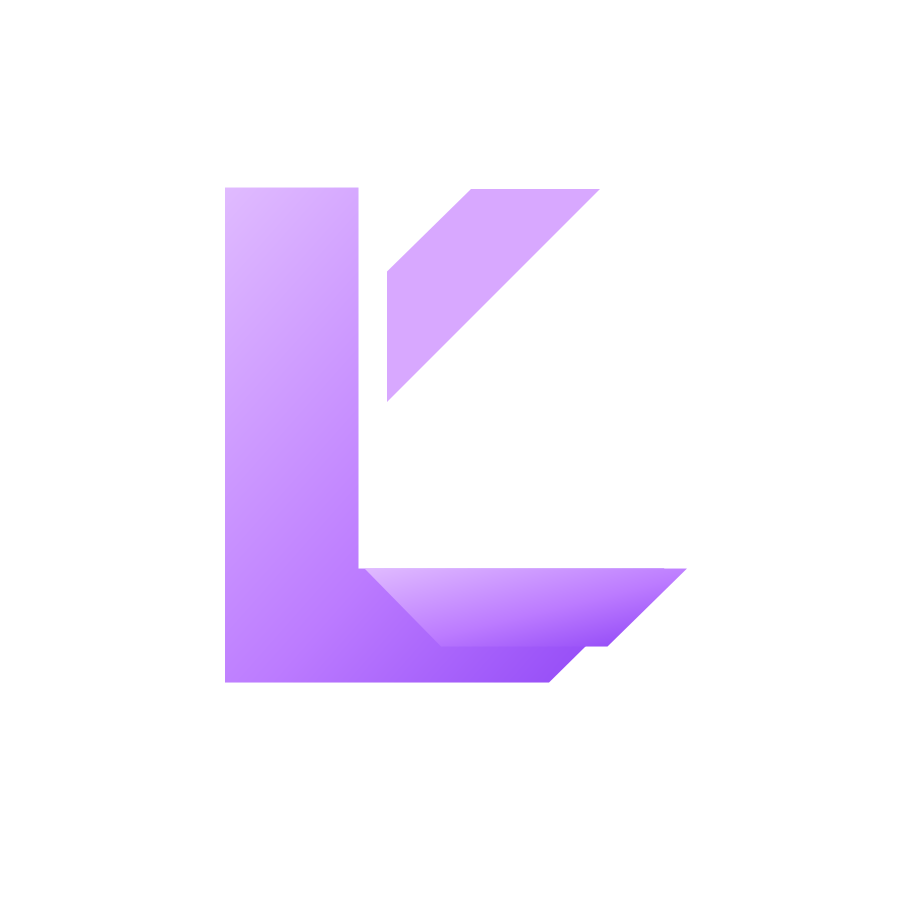

Создаём продукты,
которыми хочется
пользоваться.
Мы — LIMINAL PROJECT. Разрабатываем программные продукты с вниманием к производительности, стабильности и деталям. Наша цель — делать привычные вещи удобнее.

LIMINAL / PROJECTНаши проекты
Здесь мы собираем продукты LIMINAL PROJECT. Сейчас доступен один проект — игровой Android-эмулятор ALL FICTION.
ALL FICTION
Играй в мобильные игры на компьютере с комфортом. Интерфейс, производительность и управление — всё, что важно для повседневной игры.
Открыть страницу продукта ↗
Не усложнять.
А улучшать.
Мы ставим во главу угла то, что человек замечает каждый день: скорость работы, понятный интерфейс и предсказуемое поведение программы.
Прислушиваемся к пользователям, работаем над ошибками и открыты к новым идеям. Именно обратная связь помогает нам развивать наши продукты.
Предложить идею или сотрудничество ↗Давайте общаться.
Новости, новые материалы, помощь и предложения — выбирайте удобный способ связаться с нами.